This section provides instructions on how to complete and close the User Provisioning Task 1 Service Task
1. Open the ServiceNow application using the following URL in Chrome YourIT
2. Select the UP Daily Ticket Status dashboard.
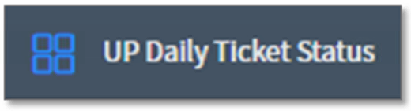
3. On the UP Daily Ticket dashboard, ensure the all Unassigned Tasks - No HPT's and Mass tab is selected.
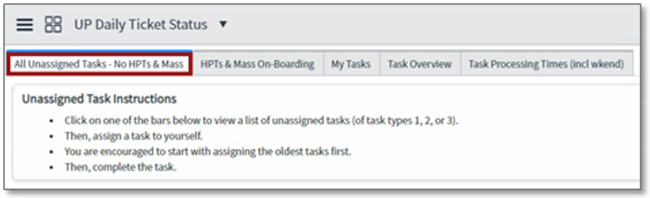
4. Click on the number in the box under Open and to the right of the Task 1 User Provisioning, Create new AD Account and Share Drive description from the User Provisioning Active Tasks chart.
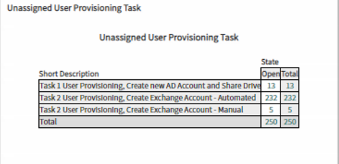
5. Once in the Task 1 User Provisioning, Create new AD Account and Share Drive ticket list displayed, ensure the tickets are sorted by opened date. Therefore, the Opened column must be sorted in ascending order (from oldest to newest)
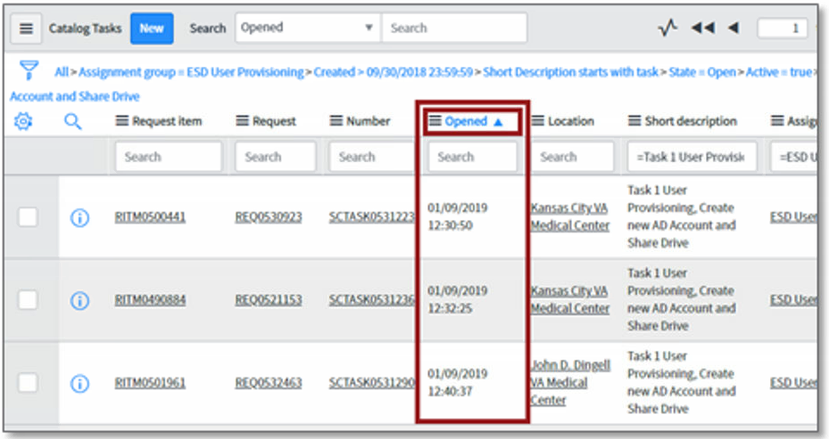
6. Locate the oldest ticket (hence, the first ticket in the list) and under the Assigned to Column, select where it says (empty) and press the Enter key on the keyboard.
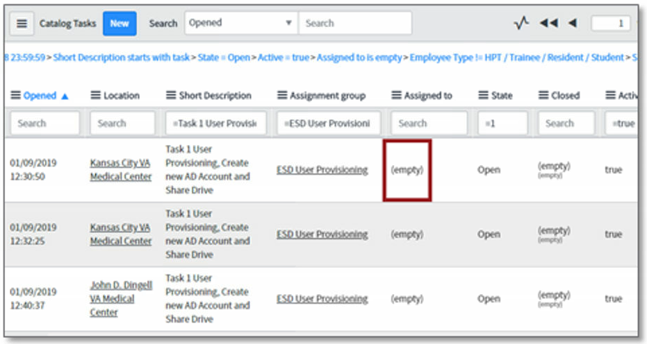
7. Enter your name in the textbox and select the Save icon or press the Enter key on the keyboard.
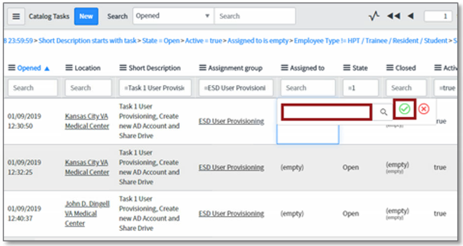
8. To locate the ticket assigned to yourself, select the UP Daily Ticket Status dashboard and select the My Tasks.
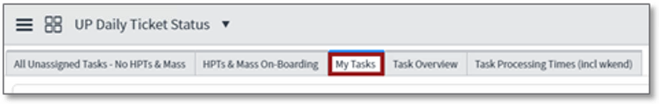
9. Select the true bar from the User Provisioning Tasks Assigned to Me chart.
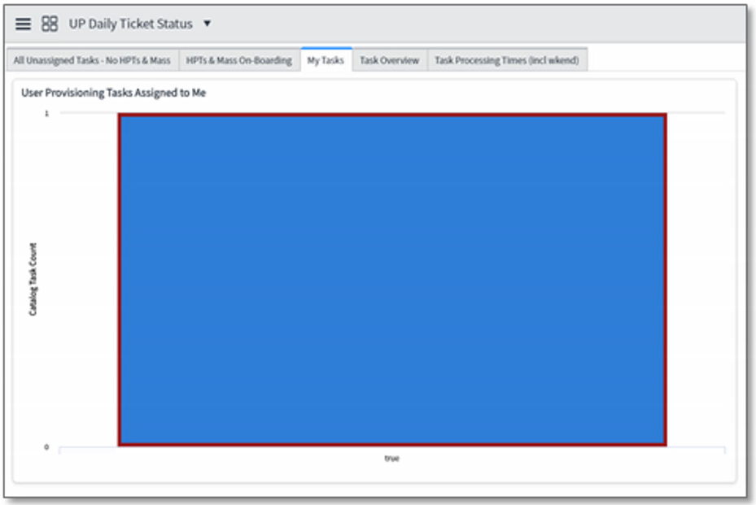
10. Once the My Tasks ticket list is displayed, select the Request Item from the list and open it by selecting the Request Item number (RITMXXXXXXX)
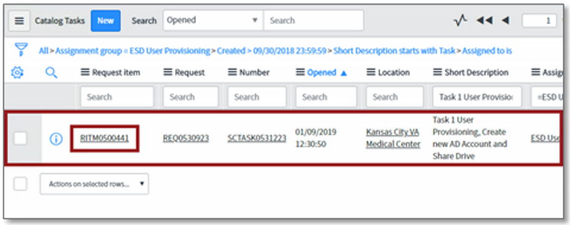
11. Once the Request Iem has been opened, locate the Catalog Tasks tab at the bottom of the page. Identify the task assigned to the ESD User Provisioning group, corresponding to Task 1 User Provisioning, Create new AD Account and Share Drive. Select the Service Task (SCTASKXXXXXXX) number.
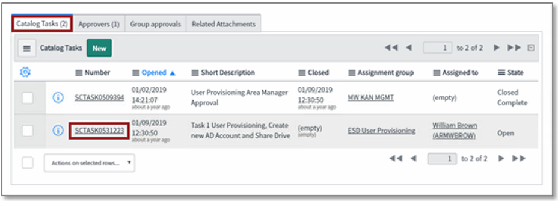
12. Once the Service Task has been opened, navigate to the Activities section, and ensure you are the only individual who attempted to assign the ticket to self.
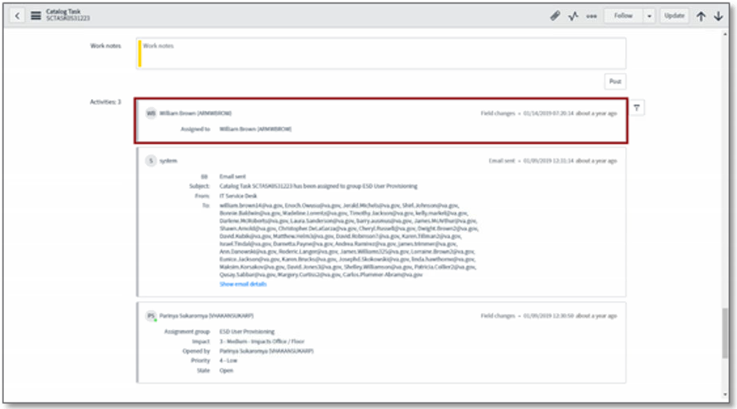
13. If someone had previously assigned the ticket to themselves, you need to assign it back to them, then reach out on Teams and tell them you picked it up by mistake and are now returning it back to them.
14. Before proceeding with this ticket, return to the RITM. Use back arrow <, or click the info circle next to the RITM and select Open record.
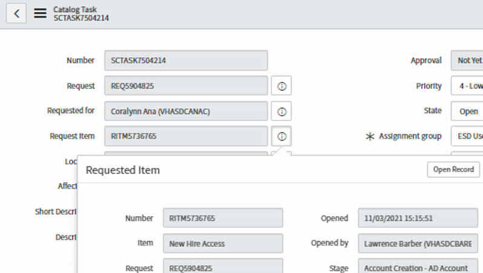
15. Once the Request Item has been opened, locate the New Hire information section and identify the Employee Type. Also locate the Organization information section and Identify the Sub-Organization.
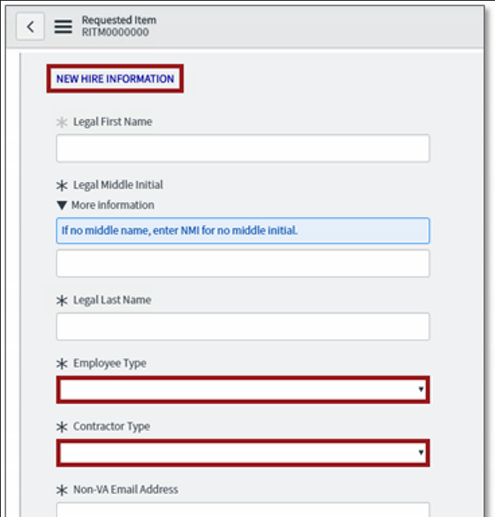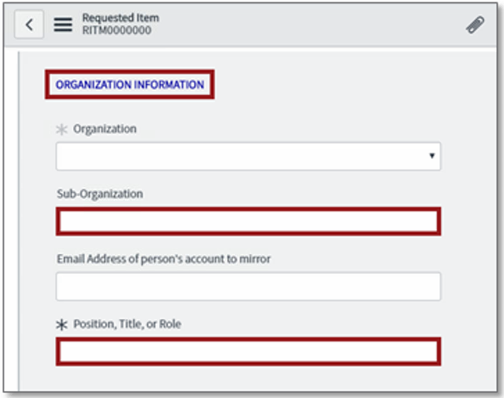